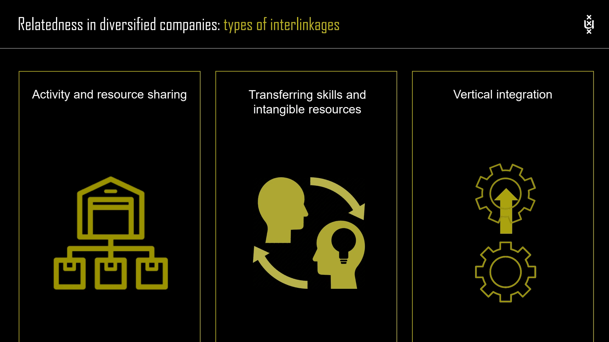

The framework
| Type | Mechanism | What to verify |
|---|---|---|
| Operating cost synergy | Coordinate activities, pool purchasing or spread overheads. | Whether combined operating costs fall after coordination costs are included. |
| Investment synergy | Share facilities, capabilities or other capital-intensive resources. | Whether less total investment is needed for the required output. |
| Revenue synergy | Combine offers or capabilities to increase revenue or willingness to pay. | Whether the joint proposition creates additional customer value. |
| Financial synergy | Use a more effective internal capital market and company-wide financial advantages. | Whether funding access or financial conditions improve relative to independence. |
Key distinctions
Sources of interdependence
The lecture identifies shared know-how, shared tangible resources, pooled negotiating power, coordinated strategies, vertical integration and combined business creation. These are mechanisms through which value might arise, not evidence that the value has already been realized.
The synergy–responsiveness tension
A shared asset can make one unit dependent on another's timing. Shared designs may force compromises. Coordination consumes managerial attention, and cultural differences or incompatible incentives may obstruct cooperation. The gains from integration must exceed these costs and any loss of market responsiveness.
Four managerial biases
Synergy bias overestimates benefits and underestimates costs. Upside bias overlooks negative consequences. Parenting bias assumes that forcing units to collaborate is the way to capture value. Skills bias assumes the necessary knowledge and capabilities are already available.
How to use it
- Name the specific activity, resource or relationship being combined.
- Estimate gains and costs against a stand-alone comparison.
- Identify dependencies, decision rights and implementation responsibilities.
- Check whether the claimed value survives realistic coordination and response costs.
Keep in mind
Do not present '1 + 1 > 2' as an assumption. It is the proposition that the analysis must establish.
How can sharing reduce performance?
Reveal the explanation
It can introduce coordination costs, design compromises and delays that exceed the benefits.
Read the classroom original
Complete pages from the supplied lecture slides. Select a page to read, enlarge or browse its extracted text. Page numbers refer to the PDF’s physical page order.
